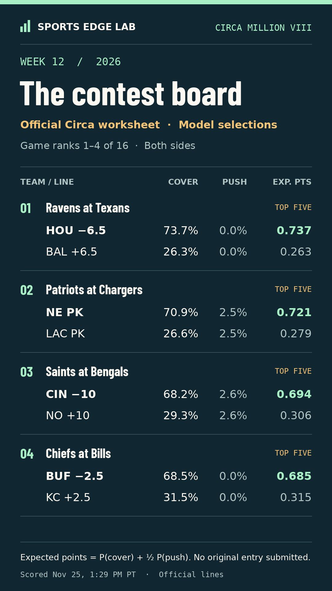
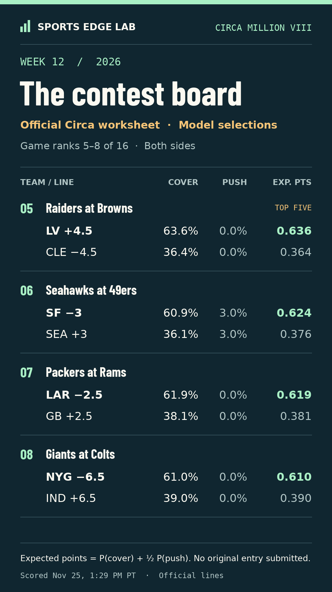
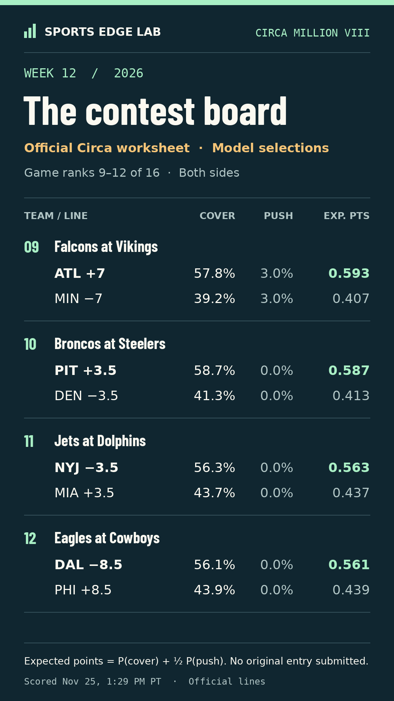
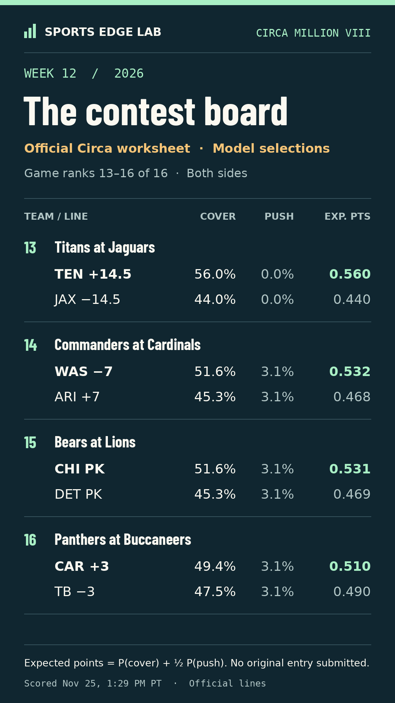
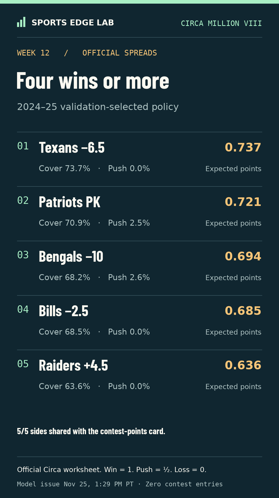
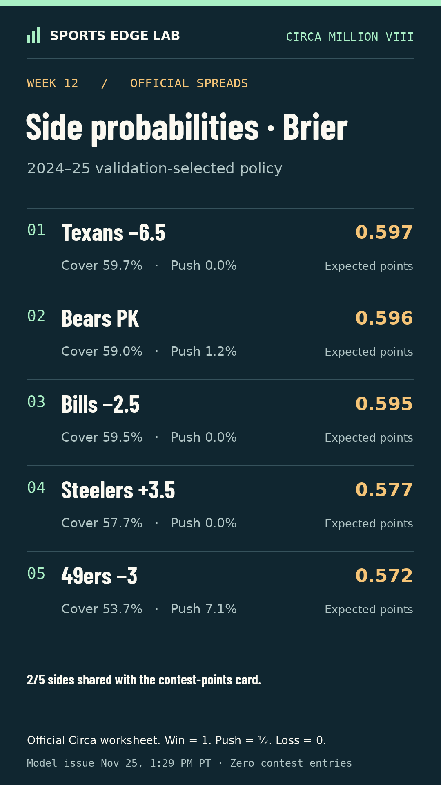

01Top five
BAL at HOU
Nov 29, 10:00 AM PT| Side | Cover | Push | Loss | Exp. pts |
|---|---|---|---|---|
| BAL +6.5 | 26.3% | 0.0% | 73.7% | 0.263 |
| HOU −6.5 · selected | 73.7% | 0.0% | 26.3% | 0.737 |
N194 compared 46,019 policies on the official 16-game sheet. The original model card was issued Nov 25, 1:29 PM PT. Zero contest entries.
Official Circa Million VIII worksheet. N191 captured the complete publisher PDF Nov 25, 10:46 AM PT. The previous 10:32 AM model card was prepared from two visual sources.
Read the official worksheet · Earlier N190 official-line model card
The standing contest-points policy retained the best 50/50 validation score. Expected points across these five selections: 3.474 out of five. A push earns half a point.
See all three N193 cards, including the perfect-week policy
Compare all 16 games, the weekly five and the remaining sides
| Side | Cover | Push | Loss | Exp. pts |
|---|---|---|---|---|
| BAL +6.5 | 26.3% | 0.0% | 73.7% | 0.263 |
| HOU −6.5 · selected | 73.7% | 0.0% | 26.3% | 0.737 |
| Side | Cover | Push | Loss | Exp. pts |
|---|---|---|---|---|
| NE PK · selected | 70.9% | 2.5% | 26.6% | 0.721 |
| LAC PK | 26.6% | 2.5% | 70.9% | 0.279 |
| Side | Cover | Push | Loss | Exp. pts |
|---|---|---|---|---|
| NO +10 | 29.3% | 2.6% | 68.2% | 0.306 |
| CIN −10 · selected | 68.2% | 2.6% | 29.3% | 0.694 |
| Side | Cover | Push | Loss | Exp. pts |
|---|---|---|---|---|
| KC +2.5 | 31.5% | 0.0% | 68.5% | 0.315 |
| BUF −2.5 · selected | 68.5% | 0.0% | 31.5% | 0.685 |
| Side | Cover | Push | Loss | Exp. pts |
|---|---|---|---|---|
| LV +4.5 · selected | 63.6% | 0.0% | 36.4% | 0.636 |
| CLE −4.5 | 36.4% | 0.0% | 63.6% | 0.364 |
| Side | Cover | Push | Loss | Exp. pts |
|---|---|---|---|---|
| SEA +3 | 36.1% | 3.0% | 60.9% | 0.376 |
| SF −3 | 60.9% | 3.0% | 36.1% | 0.624 |
| Side | Cover | Push | Loss | Exp. pts |
|---|---|---|---|---|
| GB +2.5 | 38.1% | 0.0% | 61.9% | 0.381 |
| LAR −2.5 | 61.9% | 0.0% | 38.1% | 0.619 |
| Side | Cover | Push | Loss | Exp. pts |
|---|---|---|---|---|
| NYG −6.5 | 61.0% | 0.0% | 39.0% | 0.610 |
| IND +6.5 | 39.0% | 0.0% | 61.0% | 0.390 |
| Side | Cover | Push | Loss | Exp. pts |
|---|---|---|---|---|
| ATL +7 | 57.8% | 3.0% | 39.2% | 0.593 |
| MIN −7 | 39.2% | 3.0% | 57.8% | 0.407 |
| Side | Cover | Push | Loss | Exp. pts |
|---|---|---|---|---|
| DEN −3.5 | 41.3% | 0.0% | 58.7% | 0.413 |
| PIT +3.5 | 58.7% | 0.0% | 41.3% | 0.587 |
| Side | Cover | Push | Loss | Exp. pts |
|---|---|---|---|---|
| NYJ −3.5 | 56.3% | 0.0% | 43.7% | 0.563 |
| MIA +3.5 | 43.7% | 0.0% | 56.3% | 0.437 |
| Side | Cover | Push | Loss | Exp. pts |
|---|---|---|---|---|
| PHI +8.5 | 43.9% | 0.0% | 56.1% | 0.439 |
| DAL −8.5 | 56.1% | 0.0% | 43.9% | 0.561 |
| Side | Cover | Push | Loss | Exp. pts |
|---|---|---|---|---|
| TEN +14.5 | 56.0% | 0.0% | 44.0% | 0.560 |
| JAX −14.5 | 44.0% | 0.0% | 56.0% | 0.440 |
| Side | Cover | Push | Loss | Exp. pts |
|---|---|---|---|---|
| WAS −7 | 51.6% | 3.1% | 45.3% | 0.532 |
| ARI +7 | 45.3% | 3.1% | 51.6% | 0.468 |
| Side | Cover | Push | Loss | Exp. pts |
|---|---|---|---|---|
| CHI PK | 51.6% | 3.1% | 45.3% | 0.531 |
| DET PK | 45.3% | 3.1% | 51.6% | 0.469 |
| Side | Cover | Push | Loss | Exp. pts |
|---|---|---|---|---|
| CAR +3 | 49.4% | 3.1% | 47.5% | 0.510 |
| TB −3 | 47.5% | 3.1% | 49.4% | 0.490 |
No contest games match these filters.
The completed owner campaign compared 46,019 policies. The points and four-win objectives retain the standing five. The two probability objectives now choose separate models. Their five teams match each other on this sheet, but their rank order differs. The perfect-week policy issues another five.
Original N194 card Nov 25, 1:29 PM PT. The source is the verified publisher PDF. A win earns one point and a push earns half. Zero entries were submitted.
| Validation objective | Ranked Week 12 card | Expected points | Overlap in games with points |
|---|---|---|---|
| Contest points | HOU −6.5 · NE PK · CIN −10 · BUF −2.5 · LV +4.5 | 3.474 | 5/5 |
| Four or more wins | HOU −6.5 · NE PK · CIN −10 · BUF −2.5 · LV +4.5 | 3.474 | 5/5 |
| Perfect weeks | NE PK · LAR −2.5 · LV +4.5 · BUF −2.5 · PIT +3.5 | 3.190 | 3/5 |
| Side Brier | HOU −6.5 · CHI PK · BUF −2.5 · PIT +3.5 · SF −3 | 2.936 | 2/5 |
| Side log loss | HOU −6.5 · BUF −2.5 · CHI PK · PIT +3.5 · SF −3 | 2.928 | 2/5 |
| Game rank | Signed side | Cover | Push | Loss | Expected points | Selected |
|---|---|---|---|---|---|---|
| 1 | BAL +6.5 | 26.3% | 0.0% | 73.7% | 0.263 | |
| 1 | HOU −6.5 | 73.7% | 0.0% | 26.3% | 0.737 | Top five |
| 2 | NE PK | 70.9% | 2.5% | 26.6% | 0.721 | Top five |
| 2 | LAC PK | 26.6% | 2.5% | 70.9% | 0.279 | |
| 3 | NO +10 | 29.3% | 2.6% | 68.2% | 0.306 | |
| 3 | CIN −10 | 68.2% | 2.6% | 29.3% | 0.694 | Top five |
| 4 | KC +2.5 | 31.5% | 0.0% | 68.5% | 0.315 | |
| 4 | BUF −2.5 | 68.5% | 0.0% | 31.5% | 0.685 | Top five |
| 5 | LV +4.5 | 63.6% | 0.0% | 36.4% | 0.636 | Top five |
| 5 | CLE −4.5 | 36.4% | 0.0% | 63.6% | 0.364 | |
| 6 | SEA +3 | 36.1% | 3.0% | 60.9% | 0.376 | |
| 6 | SF −3 | 60.9% | 3.0% | 36.1% | 0.624 | |
| 7 | GB +2.5 | 38.1% | 0.0% | 61.9% | 0.381 | |
| 7 | LAR −2.5 | 61.9% | 0.0% | 38.1% | 0.619 | |
| 8 | NYG −6.5 | 61.0% | 0.0% | 39.0% | 0.610 | |
| 8 | IND +6.5 | 39.0% | 0.0% | 61.0% | 0.390 | |
| 9 | ATL +7 | 57.8% | 3.0% | 39.2% | 0.593 | |
| 9 | MIN −7 | 39.2% | 3.0% | 57.8% | 0.407 | |
| 10 | DEN −3.5 | 41.3% | 0.0% | 58.7% | 0.413 | |
| 10 | PIT +3.5 | 58.7% | 0.0% | 41.3% | 0.587 | |
| 11 | NYJ −3.5 | 56.3% | 0.0% | 43.7% | 0.563 | |
| 11 | MIA +3.5 | 43.7% | 0.0% | 56.3% | 0.437 | |
| 12 | PHI +8.5 | 43.9% | 0.0% | 56.1% | 0.439 | |
| 12 | DAL −8.5 | 56.1% | 0.0% | 43.9% | 0.561 | |
| 13 | TEN +14.5 | 56.0% | 0.0% | 44.0% | 0.560 | |
| 13 | JAX −14.5 | 44.0% | 0.0% | 56.0% | 0.440 | |
| 14 | WAS −7 | 51.6% | 3.1% | 45.3% | 0.532 | |
| 14 | ARI +7 | 45.3% | 3.1% | 51.6% | 0.468 | |
| 15 | CHI PK | 51.6% | 3.1% | 45.3% | 0.531 | |
| 15 | DET PK | 45.3% | 3.1% | 51.6% | 0.469 | |
| 16 | CAR +3 | 49.4% | 3.1% | 47.5% | 0.510 | |
| 16 | TB −3 | 47.5% | 3.1% | 49.4% | 0.490 |
| Game rank | Signed side | Cover | Push | Loss | Expected points | Selected |
|---|---|---|---|---|---|---|
| 1 | BAL +6.5 | 26.3% | 0.0% | 73.7% | 0.263 | |
| 1 | HOU −6.5 | 73.7% | 0.0% | 26.3% | 0.737 | Top five |
| 2 | NE PK | 70.9% | 2.5% | 26.6% | 0.721 | Top five |
| 2 | LAC PK | 26.6% | 2.5% | 70.9% | 0.279 | |
| 3 | NO +10 | 29.3% | 2.6% | 68.2% | 0.306 | |
| 3 | CIN −10 | 68.2% | 2.6% | 29.3% | 0.694 | Top five |
| 4 | KC +2.5 | 31.5% | 0.0% | 68.5% | 0.315 | |
| 4 | BUF −2.5 | 68.5% | 0.0% | 31.5% | 0.685 | Top five |
| 5 | LV +4.5 | 63.6% | 0.0% | 36.4% | 0.636 | Top five |
| 5 | CLE −4.5 | 36.4% | 0.0% | 63.6% | 0.364 | |
| 6 | SEA +3 | 36.1% | 3.0% | 60.9% | 0.376 | |
| 6 | SF −3 | 60.9% | 3.0% | 36.1% | 0.624 | |
| 7 | GB +2.5 | 38.1% | 0.0% | 61.9% | 0.381 | |
| 7 | LAR −2.5 | 61.9% | 0.0% | 38.1% | 0.619 | |
| 8 | NYG −6.5 | 61.0% | 0.0% | 39.0% | 0.610 | |
| 8 | IND +6.5 | 39.0% | 0.0% | 61.0% | 0.390 | |
| 9 | ATL +7 | 57.8% | 3.0% | 39.2% | 0.593 | |
| 9 | MIN −7 | 39.2% | 3.0% | 57.8% | 0.407 | |
| 10 | DEN −3.5 | 41.3% | 0.0% | 58.7% | 0.413 | |
| 10 | PIT +3.5 | 58.7% | 0.0% | 41.3% | 0.587 | |
| 11 | NYJ −3.5 | 56.3% | 0.0% | 43.7% | 0.563 | |
| 11 | MIA +3.5 | 43.7% | 0.0% | 56.3% | 0.437 | |
| 12 | PHI +8.5 | 43.9% | 0.0% | 56.1% | 0.439 | |
| 12 | DAL −8.5 | 56.1% | 0.0% | 43.9% | 0.561 | |
| 13 | TEN +14.5 | 56.0% | 0.0% | 44.0% | 0.560 | |
| 13 | JAX −14.5 | 44.0% | 0.0% | 56.0% | 0.440 | |
| 14 | WAS −7 | 51.6% | 3.1% | 45.3% | 0.532 | |
| 14 | ARI +7 | 45.3% | 3.1% | 51.6% | 0.468 | |
| 15 | CHI PK | 51.6% | 3.1% | 45.3% | 0.531 | |
| 15 | DET PK | 45.3% | 3.1% | 51.6% | 0.469 | |
| 16 | CAR +3 | 49.4% | 3.1% | 47.5% | 0.510 | |
| 16 | TB −3 | 47.5% | 3.1% | 49.4% | 0.490 |
| Game rank | Signed side | Cover | Push | Loss | Expected points | Selected |
|---|---|---|---|---|---|---|
| 1 | NE PK | 68.6% | 2.3% | 29.2% | 0.697 | Top five |
| 1 | LAC PK | 29.2% | 2.3% | 68.6% | 0.303 | |
| 2 | GB +2.5 | 36.0% | 0.0% | 64.0% | 0.360 | |
| 2 | LAR −2.5 | 64.0% | 0.0% | 36.0% | 0.640 | Top five |
| 3 | LV +4.5 | 63.5% | 0.0% | 36.5% | 0.635 | Top five |
| 3 | CLE −4.5 | 36.5% | 0.0% | 63.5% | 0.365 | |
| 4 | KC +2.5 | 38.4% | 0.0% | 61.6% | 0.384 | |
| 4 | BUF −2.5 | 61.6% | 0.0% | 38.4% | 0.616 | Top five |
| 5 | DEN −3.5 | 39.8% | 0.0% | 60.2% | 0.398 | |
| 5 | PIT +3.5 | 60.2% | 0.0% | 39.8% | 0.602 | Top five |
| 6 | ATL +7 | 57.7% | 3.2% | 39.2% | 0.592 | |
| 6 | MIN −7 | 39.2% | 3.2% | 57.7% | 0.408 | |
| 7 | NO +10 | 41.1% | 2.7% | 56.2% | 0.425 | |
| 7 | CIN −10 | 56.2% | 2.7% | 41.1% | 0.575 | |
| 8 | NYJ −3.5 | 44.1% | 0.0% | 55.9% | 0.441 | |
| 8 | MIA +3.5 | 55.9% | 0.0% | 44.1% | 0.559 | |
| 9 | SEA +3 | 43.1% | 2.6% | 54.3% | 0.444 | |
| 9 | SF −3 | 54.3% | 2.6% | 43.1% | 0.556 | |
| 10 | TEN +14.5 | 53.9% | 0.0% | 46.1% | 0.539 | |
| 10 | JAX −14.5 | 46.1% | 0.0% | 53.9% | 0.461 | |
| 11 | BAL +6.5 | 46.3% | 0.0% | 53.7% | 0.463 | |
| 11 | HOU −6.5 | 53.7% | 0.0% | 46.3% | 0.537 | |
| 12 | CHI PK | 44.8% | 2.9% | 52.3% | 0.463 | |
| 12 | DET PK | 52.3% | 2.9% | 44.8% | 0.537 | |
| 13 | PHI +8.5 | 52.6% | 0.0% | 47.4% | 0.526 | |
| 13 | DAL −8.5 | 47.4% | 0.0% | 52.6% | 0.474 | |
| 14 | WAS −7 | 45.9% | 3.3% | 50.8% | 0.476 | |
| 14 | ARI +7 | 50.8% | 3.3% | 45.9% | 0.524 | |
| 15 | NYG −6.5 | 48.9% | 0.0% | 51.1% | 0.489 | |
| 15 | IND +6.5 | 51.1% | 0.0% | 48.9% | 0.511 | |
| 16 | CAR +3 | 48.7% | 3.6% | 47.8% | 0.504 | |
| 16 | TB −3 | 47.8% | 3.6% | 48.7% | 0.496 |
| Game rank | Signed side | Cover | Push | Loss | Expected points | Selected |
|---|---|---|---|---|---|---|
| 1 | BAL +6.5 | 40.3% | 0.0% | 59.7% | 0.403 | |
| 1 | HOU −6.5 | 59.7% | 0.0% | 40.3% | 0.597 | Top five |
| 2 | CHI PK | 59.0% | 1.2% | 39.9% | 0.596 | Top five |
| 2 | DET PK | 39.9% | 1.2% | 59.0% | 0.404 | |
| 3 | KC +2.5 | 40.5% | 0.0% | 59.5% | 0.405 | |
| 3 | BUF −2.5 | 59.5% | 0.0% | 40.5% | 0.595 | Top five |
| 4 | DEN −3.5 | 42.3% | 0.0% | 57.7% | 0.423 | |
| 4 | PIT +3.5 | 57.7% | 0.0% | 42.3% | 0.577 | Top five |
| 5 | SEA +3 | 39.3% | 7.1% | 53.7% | 0.428 | |
| 5 | SF −3 | 53.7% | 7.1% | 39.3% | 0.572 | Top five |
| 6 | GB +2.5 | 42.9% | 0.0% | 57.1% | 0.429 | |
| 6 | LAR −2.5 | 57.1% | 0.0% | 42.9% | 0.571 | |
| 7 | NO +10 | 41.6% | 4.3% | 54.1% | 0.438 | |
| 7 | CIN −10 | 54.1% | 4.3% | 41.6% | 0.562 | |
| 8 | NYG −6.5 | 52.6% | 0.0% | 47.4% | 0.526 | |
| 8 | IND +6.5 | 47.4% | 0.0% | 52.6% | 0.474 | |
| 9 | LV +4.5 | 52.3% | 0.0% | 47.7% | 0.523 | |
| 9 | CLE −4.5 | 47.7% | 0.0% | 52.3% | 0.477 | |
| 10 | ATL +7 | 49.1% | 5.3% | 45.6% | 0.517 | |
| 10 | MIN −7 | 45.6% | 5.3% | 49.1% | 0.483 | |
| 11 | CAR +3 | 45.0% | 7.0% | 48.0% | 0.485 | |
| 11 | TB −3 | 48.0% | 7.0% | 45.0% | 0.515 | |
| 12 | PHI +8.5 | 48.6% | 0.0% | 51.4% | 0.486 | |
| 12 | DAL −8.5 | 51.4% | 0.0% | 48.6% | 0.514 | |
| 13 | WAS −7 | 45.8% | 5.8% | 48.4% | 0.487 | |
| 13 | ARI +7 | 48.4% | 5.8% | 45.8% | 0.513 | |
| 14 | TEN +14.5 | 50.9% | 0.0% | 49.1% | 0.509 | |
| 14 | JAX −14.5 | 49.1% | 0.0% | 50.9% | 0.491 | |
| 15 | NYJ −3.5 | 50.4% | 0.0% | 49.6% | 0.504 | |
| 15 | MIA +3.5 | 49.6% | 0.0% | 50.4% | 0.496 | |
| 16 | NE PK | 49.8% | 0.9% | 49.3% | 0.503 | |
| 16 | LAC PK | 49.3% | 0.9% | 49.8% | 0.497 |
| Game rank | Signed side | Cover | Push | Loss | Expected points | Selected |
|---|---|---|---|---|---|---|
| 1 | BAL +6.5 | 40.3% | 0.0% | 59.7% | 0.403 | |
| 1 | HOU −6.5 | 59.7% | 0.0% | 40.3% | 0.597 | Top five |
| 2 | KC +2.5 | 40.7% | 0.0% | 59.3% | 0.407 | |
| 2 | BUF −2.5 | 59.3% | 0.0% | 40.7% | 0.593 | Top five |
| 3 | CHI PK | 58.7% | 1.1% | 40.1% | 0.593 | Top five |
| 3 | DET PK | 40.1% | 1.1% | 58.7% | 0.407 | |
| 4 | DEN −3.5 | 42.7% | 0.0% | 57.3% | 0.427 | |
| 4 | PIT +3.5 | 57.3% | 0.0% | 42.7% | 0.573 | Top five |
| 5 | SEA +3 | 39.2% | 7.2% | 53.6% | 0.428 | |
| 5 | SF −3 | 53.6% | 7.2% | 39.2% | 0.572 | Top five |
| 6 | GB +2.5 | 43.1% | 0.0% | 56.9% | 0.431 | |
| 6 | LAR −2.5 | 56.9% | 0.0% | 43.1% | 0.569 | |
| 7 | NO +10 | 41.7% | 4.0% | 54.3% | 0.437 | |
| 7 | CIN −10 | 54.3% | 4.0% | 41.7% | 0.563 | |
| 8 | NYG −6.5 | 53.1% | 0.0% | 46.9% | 0.531 | |
| 8 | IND +6.5 | 46.9% | 0.0% | 53.1% | 0.469 | |
| 9 | LV +4.5 | 52.4% | 0.0% | 47.6% | 0.524 | |
| 9 | CLE −4.5 | 47.6% | 0.0% | 52.4% | 0.476 | |
| 10 | ATL +7 | 49.3% | 5.2% | 45.6% | 0.518 | |
| 10 | MIN −7 | 45.6% | 5.2% | 49.3% | 0.482 | |
| 11 | PHI +8.5 | 48.5% | 0.0% | 51.5% | 0.485 | |
| 11 | DAL −8.5 | 51.5% | 0.0% | 48.5% | 0.515 | |
| 12 | CAR +3 | 45.0% | 7.3% | 47.7% | 0.486 | |
| 12 | TB −3 | 47.7% | 7.3% | 45.0% | 0.514 | |
| 13 | TEN +14.5 | 51.2% | 0.0% | 48.8% | 0.512 | |
| 13 | JAX −14.5 | 48.8% | 0.0% | 51.2% | 0.488 | |
| 14 | NYJ −3.5 | 50.8% | 0.0% | 49.2% | 0.508 | |
| 14 | MIA +3.5 | 49.2% | 0.0% | 50.8% | 0.492 | |
| 15 | WAS −7 | 46.4% | 5.7% | 47.9% | 0.493 | |
| 15 | ARI +7 | 47.9% | 5.7% | 46.4% | 0.507 | |
| 16 | NE PK | 50.2% | 0.9% | 48.8% | 0.507 | |
| 16 | LAC PK | 48.8% | 0.9% | 50.2% | 0.493 |
| Objective | 2024 | 2025 | 2026 replay | 2026 top five W–L–P | Weighted | Standing | Tied policies |
|---|---|---|---|---|---|---|---|
| Contest points | 53.5 | 55 | 28 | 27–26–2 | 54.25 | 54.25 | 3 |
| Side Brier | 0.5157 | 0.5097 | 0.53557 | 29–25–1 | 0.5127 | 0.5127 | 1 |
| Side log loss | 0.7542 | 0.7351 | 0.79312 | 29–25–1 | 0.7446 | 0.7446 | 1 |
| Four or more wins | 8 | 5 | 2 | 27–26–2 | 6.5 | 6.5 | 6 |
| Perfect weeks | 1 | 2 | 0 | 24–29–2 | 1.5 | 1.5 | 132 |
| Objective | 2024 | 2025 | 2026 replay | 2026 top five W–L–P | Weighted | Standing | Tied policies |
|---|---|---|---|---|---|---|---|
| Contest points | 53.5 | 55 | 28 | 27–26–2 | 54.4 | 54.4 | 2 |
| Side Brier | 0.5157 | 0.5097 | 0.53557 | 29–25–1 | 0.5121 | 0.5121 | 1 |
| Side log loss | 0.7542 | 0.7351 | 0.79312 | 29–25–1 | 0.7427 | 0.7427 | 1 |
| Four or more wins | 6 | 7 | 2 | 28–24–3 | 6.6 | 6.4 | 2 |
| Perfect weeks | 0 | 3 | 0 | 28–25–2 | 1.8 | 1.8 | 120 |
| Objective | 2024 | 2025 | 2026 replay | 2026 top five W–L–P | Weighted | Standing | Tied policies |
|---|---|---|---|---|---|---|---|
| Contest points | 53.5 | 55 | 28 | 27–26–2 | 54.55 | 54.55 | 2 |
| Side Brier | 0.5157 | 0.5097 | 0.53557 | 29–25–1 | 0.5115 | 0.5115 | 1 |
| Side log loss | 0.7545 | 0.7349 | 0.792 | 29–25–1 | 0.7408 | 0.7408 | 1 |
| Four or more wins | 4 | 8 | 2 | 26–26–3 | 6.8 | 6.3 | 4 |
| Perfect weeks | 0 | 3 | 0 | 28–25–2 | 2.1 | 2.1 | 120 |
| Objective | 2024 | 2025 | 2026 replay | 2026 top five W–L–P | Weighted | Standing | Tied policies |
|---|---|---|---|---|---|---|---|
| Contest points | 53.5 | 55 | 28 | 27–26–2 | 54.7 | 54.7 | 2 |
| Side Brier | 0.5159 | 0.5097 | 0.53656 | 27–26–2 | 0.5109 | 0.5109 | 1 |
| Side log loss | 0.7545 | 0.7349 | 0.792 | 29–25–1 | 0.7388 | 0.7388 | 1 |
| Four or more wins | 4 | 8 | 2 | 26–26–3 | 7.2 | 6.4 | 4 |
| Perfect weeks | 0 | 3 | 0 | 28–25–2 | 2.4 | 2.4 | 120 |
| Objective | 2024 | 2025 | 2026 replay | 2026 top five W–L–P | Weighted | Standing | Tied policies |
|---|---|---|---|---|---|---|---|
| Contest points | 53.5 | 55 | 28 | 27–26–2 | 54.85 | 54.85 | 2 |
| Side Brier | 0.5159 | 0.5097 | 0.53656 | 27–26–2 | 0.5103 | 0.5103 | 1 |
| Side log loss | 0.7548 | 0.7348 | 0.79308 | 28–26–1 | 0.7368 | 0.7368 | 1 |
| Four or more wins | 4 | 8 | 2 | 26–26–3 | 7.6 | 6.7 | 4 |
| Perfect weeks | 0 | 3 | 0 | 28–25–2 | 2.7 | 2.7 | 120 |
Compare all 16 games, the weekly five and the remaining sides · Original N193 Circa model card.
 Official points-model cardFive selected sides on the actual worksheet
Official points-model cardFive selected sides on the actual worksheet
Official alternatives · page 1Four fixtures with both sides on the line
Official alternatives · page 2Four fixtures with both sides on the line
Official alternatives · page 3Four fixtures with both sides on the line
Official alternatives · page 4Four fixtures with both sides on the line
Four or more winsMatches the five points selections
Best side BrierA new probability model Best side log lossAnother new model with a different rank order
Best side log lossAnother new model with a different rank order Perfect weekFive selections from the perfect-week policy
Perfect weekFive selections from the perfect-week policyThe study compared 45,249 policies on identical official boards. It retained the earlier five for contest points and four-win weeks. The perfect-week selection changed. Its historical result ties the best earlier policy at 1.5 perfect weeks per season. The new policy won the predeclared contest-points tiebreak. All 32 sides were scored at Nov 25, 12:41 PM PT. Contest entries submitted: zero.
| Rank | Points / four wins | Brier / log loss | Perfect weeks |
|---|---|---|---|
| 1 | HOU −6.5 | HOU −6.5 | NE PK |
| 2 | NE PK | BUF −2.5 | LAR −2.5 |
| 3 | CIN −10 | CIN −10 | LV +4.5 |
| 4 | BUF −2.5 | LAR −2.5 | BUF −2.5 |
| 5 | LV +4.5 | NE PK | PIT +3.5 |
| Policy | Expected points | P(4+ wins) | P(5 wins) | 2026 replay points | 2026 perfect weeks |
|---|---|---|---|---|---|
| Points / four wins | 3.474 | 50.7% | 15.5% | 28/55 | 2/11 |
| Brier / log loss | 3.004 | 32.7% | 7.4% | 28.5/55 | 2/11 |
| Perfect weeks | 3.190 | 40.1% | 10.3% | 25/55 | 0/11 |
Prospective card probabilities assume independent games and use each policy’s own cover and push estimates. A validation winner can project a lower chance of five wins on this particular slate.
| Game rank | Side | Cover | Push | Loss | Expected points | Card |
|---|---|---|---|---|---|---|
| 1 | BAL +6.5 | 26.3% | 0.0% | 73.7% | 0.263 | |
| 1 | HOU −6.5 | 73.7% | 0.0% | 26.3% | 0.737 | Selected |
| 2 | NE PK | 70.9% | 2.5% | 26.6% | 0.721 | Selected |
| 2 | LAC PK | 26.6% | 2.5% | 70.9% | 0.279 | |
| 3 | NO +10 | 29.3% | 2.6% | 68.2% | 0.306 | |
| 3 | CIN −10 | 68.2% | 2.6% | 29.3% | 0.694 | Selected |
| 4 | KC +2.5 | 31.5% | 0.0% | 68.5% | 0.315 | |
| 4 | BUF −2.5 | 68.5% | 0.0% | 31.5% | 0.685 | Selected |
| 5 | LV +4.5 | 63.6% | 0.0% | 36.4% | 0.636 | Selected |
| 5 | CLE −4.5 | 36.4% | 0.0% | 63.6% | 0.364 | |
| 6 | SEA +3 | 36.1% | 3.0% | 60.9% | 0.376 | |
| 6 | SF −3 | 60.9% | 3.0% | 36.1% | 0.624 | |
| 7 | GB +2.5 | 38.1% | 0.0% | 61.9% | 0.381 | |
| 7 | LAR −2.5 | 61.9% | 0.0% | 38.1% | 0.619 | |
| 8 | NYG −6.5 | 61.0% | 0.0% | 39.0% | 0.610 | |
| 8 | IND +6.5 | 39.0% | 0.0% | 61.0% | 0.390 | |
| 9 | ATL +7 | 57.8% | 3.0% | 39.2% | 0.593 | |
| 9 | MIN −7 | 39.2% | 3.0% | 57.8% | 0.407 | |
| 10 | DEN −3.5 | 41.3% | 0.0% | 58.7% | 0.413 | |
| 10 | PIT +3.5 | 58.7% | 0.0% | 41.3% | 0.587 | |
| 11 | NYJ −3.5 | 56.3% | 0.0% | 43.7% | 0.563 | |
| 11 | MIA +3.5 | 43.7% | 0.0% | 56.3% | 0.437 | |
| 12 | PHI +8.5 | 43.9% | 0.0% | 56.1% | 0.439 | |
| 12 | DAL −8.5 | 56.1% | 0.0% | 43.9% | 0.561 | |
| 13 | TEN +14.5 | 56.0% | 0.0% | 44.0% | 0.560 | |
| 13 | JAX −14.5 | 44.0% | 0.0% | 56.0% | 0.440 | |
| 14 | WAS −7 | 51.6% | 3.1% | 45.3% | 0.532 | |
| 14 | ARI +7 | 45.3% | 3.1% | 51.6% | 0.468 | |
| 15 | CHI PK | 51.6% | 3.1% | 45.3% | 0.531 | |
| 15 | DET PK | 45.3% | 3.1% | 51.6% | 0.469 | |
| 16 | CAR +3 | 49.4% | 3.1% | 47.5% | 0.510 | |
| 16 | TB −3 | 47.5% | 3.1% | 49.4% | 0.490 |
| Game rank | Side | Cover | Push | Loss | Expected points | Card |
|---|---|---|---|---|---|---|
| 1 | BAL +6.5 | 36.9% | 0.0% | 63.1% | 0.369 | |
| 1 | HOU −6.5 | 63.1% | 0.0% | 36.9% | 0.631 | Selected |
| 2 | KC +2.5 | 36.9% | 0.0% | 63.1% | 0.369 | |
| 2 | BUF −2.5 | 63.1% | 0.0% | 36.9% | 0.631 | Selected |
| 3 | NO +10 | 39.2% | 3.1% | 57.7% | 0.408 | |
| 3 | CIN −10 | 57.7% | 3.1% | 39.2% | 0.592 | Selected |
| 4 | GB +2.5 | 41.8% | 0.0% | 58.2% | 0.418 | |
| 4 | LAR −2.5 | 58.2% | 0.0% | 41.8% | 0.582 | Selected |
| 5 | NE PK | 55.2% | 3.0% | 41.8% | 0.567 | Selected |
| 5 | LAC PK | 41.8% | 3.0% | 55.2% | 0.433 | |
| 6 | SEA +3 | 41.8% | 3.1% | 55.1% | 0.434 | |
| 6 | SF −3 | 55.1% | 3.1% | 41.8% | 0.566 | |
| 7 | PHI +8.5 | 43.5% | 0.0% | 56.5% | 0.435 | |
| 7 | DAL −8.5 | 56.5% | 0.0% | 43.5% | 0.565 | |
| 8 | DEN −3.5 | 44.5% | 0.0% | 55.5% | 0.445 | |
| 8 | PIT +3.5 | 55.5% | 0.0% | 44.5% | 0.555 | |
| 9 | CHI PK | 52.3% | 3.1% | 44.6% | 0.539 | |
| 9 | DET PK | 44.6% | 3.1% | 52.3% | 0.461 | |
| 10 | LV +4.5 | 53.6% | 0.0% | 46.4% | 0.536 | |
| 10 | CLE −4.5 | 46.4% | 0.0% | 53.6% | 0.464 | |
| 11 | CAR +3 | 45.5% | 3.1% | 51.4% | 0.471 | |
| 11 | TB −3 | 51.4% | 3.1% | 45.5% | 0.529 | |
| 12 | TEN +14.5 | 47.8% | 0.0% | 52.2% | 0.478 | |
| 12 | JAX −14.5 | 52.2% | 0.0% | 47.8% | 0.522 | |
| 13 | ATL +7 | 46.4% | 3.2% | 50.4% | 0.480 | |
| 13 | MIN −7 | 50.4% | 3.2% | 46.4% | 0.520 | |
| 14 | NYJ −3.5 | 49.3% | 0.0% | 50.7% | 0.493 | |
| 14 | MIA +3.5 | 50.7% | 0.0% | 49.3% | 0.507 | |
| 15 | WAS −7 | 48.3% | 3.0% | 48.7% | 0.498 | |
| 15 | ARI +7 | 48.7% | 3.0% | 48.3% | 0.502 | |
| 16 | NYG −6.5 | 50.1% | 0.0% | 49.9% | 0.501 | |
| 16 | IND +6.5 | 49.9% | 0.0% | 50.1% | 0.499 |
| Game rank | Side | Cover | Push | Loss | Expected points | Card |
|---|---|---|---|---|---|---|
| 1 | NE PK | 68.6% | 2.3% | 29.2% | 0.697 | Selected |
| 1 | LAC PK | 29.2% | 2.3% | 68.6% | 0.303 | |
| 2 | GB +2.5 | 36.0% | 0.0% | 64.0% | 0.360 | |
| 2 | LAR −2.5 | 64.0% | 0.0% | 36.0% | 0.640 | Selected |
| 3 | LV +4.5 | 63.5% | 0.0% | 36.5% | 0.635 | Selected |
| 3 | CLE −4.5 | 36.5% | 0.0% | 63.5% | 0.365 | |
| 4 | KC +2.5 | 38.4% | 0.0% | 61.6% | 0.384 | |
| 4 | BUF −2.5 | 61.6% | 0.0% | 38.4% | 0.616 | Selected |
| 5 | DEN −3.5 | 39.8% | 0.0% | 60.2% | 0.398 | |
| 5 | PIT +3.5 | 60.2% | 0.0% | 39.8% | 0.602 | Selected |
| 6 | ATL +7 | 57.7% | 3.2% | 39.2% | 0.592 | |
| 6 | MIN −7 | 39.2% | 3.2% | 57.7% | 0.408 | |
| 7 | NO +10 | 41.1% | 2.7% | 56.2% | 0.425 | |
| 7 | CIN −10 | 56.2% | 2.7% | 41.1% | 0.575 | |
| 8 | NYJ −3.5 | 44.1% | 0.0% | 55.9% | 0.441 | |
| 8 | MIA +3.5 | 55.9% | 0.0% | 44.1% | 0.559 | |
| 9 | SEA +3 | 43.1% | 2.6% | 54.3% | 0.444 | |
| 9 | SF −3 | 54.3% | 2.6% | 43.1% | 0.556 | |
| 10 | TEN +14.5 | 53.9% | 0.0% | 46.1% | 0.539 | |
| 10 | JAX −14.5 | 46.1% | 0.0% | 53.9% | 0.461 | |
| 11 | BAL +6.5 | 46.3% | 0.0% | 53.7% | 0.463 | |
| 11 | HOU −6.5 | 53.7% | 0.0% | 46.3% | 0.537 | |
| 12 | CHI PK | 44.8% | 2.9% | 52.3% | 0.463 | |
| 12 | DET PK | 52.3% | 2.9% | 44.8% | 0.537 | |
| 13 | PHI +8.5 | 52.6% | 0.0% | 47.4% | 0.526 | |
| 13 | DAL −8.5 | 47.4% | 0.0% | 52.6% | 0.474 | |
| 14 | WAS −7 | 45.9% | 3.3% | 50.8% | 0.476 | |
| 14 | ARI +7 | 50.8% | 3.3% | 45.9% | 0.524 | |
| 15 | NYG −6.5 | 48.9% | 0.0% | 51.1% | 0.489 | |
| 15 | IND +6.5 | 51.1% | 0.0% | 48.9% | 0.511 | |
| 16 | CAR +3 | 48.7% | 3.6% | 47.8% | 0.504 | |
| 16 | TB −3 | 47.8% | 3.6% | 48.7% | 0.496 |
| Objective | 2024 | 2025 | 2026 replay | Weighted winner | Weighted standing | Tied best | Co-leader dropping a week |
|---|---|---|---|---|---|---|---|
| Expected contest points | 53.5 | 55 | 28 | 54.25 | 54.25 | 2 | 12/18 |
| Side probabilities · Brier | 0.51622 | 0.51345 | 0.55059 | 0.51483 | 0.51483 | 1 | Not evaluated |
| Side probabilities · log loss | 0.75715 | 0.74335 | 0.82419 | 0.75025 | 0.75025 | 1 | Not evaluated |
| Four or more wins | 8 | 5 | 2 | 6.5 | 6.5 | 2 | Not evaluated |
| Five wins | 1 | 2 | 0 | 1.5 | 1.5 | 132 | Not evaluated |
| Objective | 2024 | 2025 | 2026 replay | Weighted winner | Weighted standing | Tied best | Co-leader dropping a week |
|---|---|---|---|---|---|---|---|
| Expected contest points | 53.5 | 55 | 28 | 54.4 | 54.4 | 2 | 16/18 |
| Side probabilities · Brier | 0.52032 | 0.50951 | 0.54762 | 0.51383 | 0.51383 | 1 | Not evaluated |
| Side probabilities · log loss | 0.76158 | 0.73904 | 0.82105 | 0.74806 | 0.74806 | 1 | Not evaluated |
| Four or more wins | 8 | 5 | 2 | 6.2 | 6.2 | 2 | Not evaluated |
| Five wins | 0 | 3 | 0 | 1.8 | 1.8 | 120 | Not evaluated |
| Objective | 2024 | 2025 | 2026 replay | Weighted winner | Weighted standing | Tied best | Co-leader dropping a week |
|---|---|---|---|---|---|---|---|
| Expected contest points | 53.5 | 55 | 28 | 54.55 | 54.55 | 2 | 17/18 |
| Side probabilities · Brier | 0.52032 | 0.50951 | 0.54762 | 0.51275 | 0.51275 | 1 | Not evaluated |
| Side probabilities · log loss | 0.76158 | 0.73904 | 0.82105 | 0.74580 | 0.74580 | 1 | Not evaluated |
| Four or more wins | 4 | 7 | 1 | 6.1 | 6 | 1 | Not evaluated |
| Five wins | 0 | 3 | 0 | 2.1 | 2.1 | 120 | Not evaluated |
| Objective | 2024 | 2025 | 2026 replay | Weighted winner | Weighted standing | Tied best | Co-leader dropping a week |
|---|---|---|---|---|---|---|---|
| Expected contest points | 53.5 | 55 | 28 | 54.7 | 54.7 | 2 | 17/18 |
| Side probabilities · Brier | 0.52032 | 0.50951 | 0.54762 | 0.51167 | 0.51167 | 1 | Not evaluated |
| Side probabilities · log loss | 0.76158 | 0.73904 | 0.82105 | 0.74355 | 0.74355 | 1 | Not evaluated |
| Four or more wins | 4 | 7 | 1 | 6.4 | 6.2 | 1 | Not evaluated |
| Five wins | 0 | 3 | 0 | 2.4 | 2.4 | 120 | Not evaluated |
| Objective | 2024 | 2025 | 2026 replay | Weighted winner | Weighted standing | Tied best | Co-leader dropping a week |
|---|---|---|---|---|---|---|---|
| Expected contest points | 53.5 | 55 | 28 | 54.85 | 54.85 | 2 | 15/18 |
| Side probabilities · Brier | 0.52032 | 0.50951 | 0.54762 | 0.51059 | 0.51059 | 1 | Not evaluated |
| Side probabilities · log loss | 0.76158 | 0.73904 | 0.82105 | 0.74130 | 0.74130 | 1 | Not evaluated |
| Four or more wins | 4 | 7 | 1 | 6.7 | 6.6 | 1 | Not evaluated |
| Five wins | 0 | 3 | 0 | 2.7 | 2.7 | 120 | Not evaluated |
Results use 272 official games and 18 five-game cards in each validation year, then 163 games and 11 cards in the 2026 replay. Brier and log loss measure all official game outcomes. Contest points count 90 or 55 selected sides. Four-win and perfect-week totals count weeks.
These scores combine realized accuracy on decisive official lines and the historical margin-edge top five. The mixed objectives compare those outcomes with the probability-ranked five. Higher values are better.
| Objective | 2024 | 2025 | 2026 replay | Matched combinations |
|---|---|---|---|---|
| Historical combined index | 47.9% | 53.4% | 45.3% | 3 |
| Margin-edge card points rate | 48.9% | 55.0% | 45.5% | 3 |
| ATS accuracy on decisive outcomes | 46.8% | 51.9% | 45.2% | 3 |
| 25% historical index | 56.5% | 59.2% | 49.5% | 135,747 |
| 50% historical index | 53.6% | 57.3% | 48.1% | 135,747 |
| 75% historical index | 50.8% | 55.4% | 46.7% | 135,747 |
| Equal-weighted card rates | 54.2% | 58.1% | 48.2% | 135,747 |
| Objective | 2024 | 2025 | 2026 replay | Matched combinations |
|---|---|---|---|---|
| Historical combined index | 47.9% | 53.4% | 45.3% | 3 |
| Margin-edge card points rate | 48.9% | 55.0% | 45.5% | 3 |
| ATS accuracy on decisive outcomes | 46.8% | 51.9% | 45.2% | 3 |
| 25% historical index | 56.5% | 59.2% | 49.5% | 135,747 |
| 50% historical index | 53.6% | 57.3% | 48.1% | 135,747 |
| 75% historical index | 50.8% | 55.4% | 46.7% | 135,747 |
| Equal-weighted card rates | 54.2% | 58.1% | 48.2% | 135,747 |
| Objective | 2024 | 2025 | 2026 replay | Matched combinations |
|---|---|---|---|---|
| Historical combined index | 47.9% | 53.4% | 45.3% | 3 |
| Margin-edge card points rate | 48.9% | 55.0% | 45.5% | 3 |
| ATS accuracy on decisive outcomes | 46.8% | 51.9% | 45.2% | 3 |
| 25% historical index | 56.5% | 59.2% | 49.5% | 135,747 |
| 50% historical index | 53.6% | 57.3% | 48.1% | 135,747 |
| 75% historical index | 50.8% | 55.4% | 46.7% | 135,747 |
| Equal-weighted card rates | 54.2% | 58.1% | 48.2% | 135,747 |
| Objective | 2024 | 2025 | 2026 replay | Matched combinations |
|---|---|---|---|---|
| Historical combined index | 47.9% | 53.4% | 45.3% | 3 |
| Margin-edge card points rate | 48.9% | 55.0% | 45.5% | 3 |
| ATS accuracy on decisive outcomes | 46.8% | 51.9% | 45.2% | 3 |
| 25% historical index | 56.5% | 59.2% | 49.5% | 135,747 |
| 50% historical index | 53.6% | 57.3% | 48.1% | 135,747 |
| 75% historical index | 50.8% | 55.4% | 46.7% | 135,747 |
| Equal-weighted card rates | 54.2% | 58.1% | 48.2% | 135,747 |
| Objective | 2024 | 2025 | 2026 replay | Matched combinations |
|---|---|---|---|---|
| Historical combined index | 47.9% | 53.4% | 45.3% | 3 |
| Margin-edge card points rate | 48.9% | 55.0% | 45.5% | 3 |
| ATS accuracy on decisive outcomes | 46.8% | 51.9% | 45.2% | 3 |
| 25% historical index | 56.5% | 59.2% | 49.5% | 135,747 |
| 50% historical index | 53.6% | 57.3% | 48.1% | 135,747 |
| 75% historical index | 50.8% | 55.4% | 46.7% | 135,747 |
| Equal-weighted card rates | 54.2% | 58.1% | 48.2% | 135,747 |
Three new selection rules compare 281 policies on the same 18 official cards each year. A week with four wins requires four covered lines. Four points can include pushes. A perfect week requires five wins. The primary card continues to maximize expected contest points.
| Objective | 2024 | 2025 | 2026 replay | Weighted weeks | Points policy | Points policy 2026 | Tied leaders | Selections retained after dropping a week |
|---|---|---|---|---|---|---|---|---|
| Four or more wins | 8/18 | 5/18 | 2/11 | 6.50 | 6.50 | 2/11 | 2 | 18/18 |
| Five wins | 0/18 | 3/18 | 0/11 | 1.50 | 0.00 | 2/11 | 6 | 15/18 |
| Four or more points | 8/18 | 5/18 | 2/11 | 6.50 | 6.50 | 2/11 | 2 | 18/18 |
| Objective | 2024 | 2025 | 2026 replay | Weighted weeks | Points policy | Points policy 2026 | Tied leaders | Selections retained after dropping a week |
|---|---|---|---|---|---|---|---|---|
| Four or more wins | 8/18 | 5/18 | 2/11 | 6.20 | 6.20 | 2/11 | 2 | 15/18 |
| Five wins | 0/18 | 3/18 | 0/11 | 1.80 | 0.00 | 2/11 | 6 | 15/18 |
| Four or more points | 8/18 | 5/18 | 2/11 | 6.20 | 6.20 | 2/11 | 2 | 15/18 |
| Objective | 2024 | 2025 | 2026 replay | Weighted weeks | Points policy | Points policy 2026 | Tied leaders | Selections retained after dropping a week |
|---|---|---|---|---|---|---|---|---|
| Four or more wins | 6/18 | 6/18 | 2/11 | 6.00 | 5.90 | 2/11 | 1 | 9/18 |
| Five wins | 0/18 | 3/18 | 0/11 | 2.10 | 0.00 | 2/11 | 6 | 15/18 |
| Four or more points | 6/18 | 6/18 | 2/11 | 6.00 | 5.90 | 2/11 | 1 | 9/18 |
| Objective | 2024 | 2025 | 2026 replay | Weighted weeks | Points policy | Points policy 2026 | Tied leaders | Selections retained after dropping a week |
|---|---|---|---|---|---|---|---|---|
| Four or more wins | 3/18 | 7/18 | 1/11 | 6.20 | 5.60 | 2/11 | 1 | 12/18 |
| Five wins | 0/18 | 3/18 | 0/11 | 2.40 | 0.00 | 2/11 | 6 | 15/18 |
| Four or more points | 3/18 | 7/18 | 1/11 | 6.20 | 5.60 | 2/11 | 1 | 12/18 |
| Objective | 2024 | 2025 | 2026 replay | Weighted weeks | Points policy | Points policy 2026 | Tied leaders | Selections retained after dropping a week |
|---|---|---|---|---|---|---|---|---|
| Four or more wins | 3/18 | 7/18 | 1/11 | 6.60 | 5.30 | 2/11 | 1 | 12/18 |
| Five wins | 0/18 | 3/18 | 0/11 | 2.70 | 0.00 | 2/11 | 6 | 15/18 |
| Four or more points | 3/18 | 7/18 | 1/11 | 6.60 | 5.30 | 2/11 | 1 | 12/18 |
When policies tied, higher weighted contest points ranked first, followed by the incumbent points choice and its fixed registry order. The stability column omits the same numbered week from both validation years in turn. The 2026 replay played no role in selection.
Frequency decisions issued Nov 25, 11:25 AM PT. Each policy ranks 16 distinct games by the better side’s cover probability plus half its push probability. Each selects five. All submissions remain zero.
| Rank | Contest points | Four or more wins | Five wins | Four or more points |
|---|---|---|---|---|
| 1 | HOU −6.5 | HOU −6.5 | BUF −2.5 | HOU −6.5 |
| 2 | NE PK | NE PK | PIT +3.5 | NE PK |
| 3 | CIN −10 | CIN −10 | LAR −2.5 | CIN −10 |
| 4 | BUF −2.5 | BUF −2.5 | IND +6.5 | BUF −2.5 |
| 5 | LV +4.5 | LV +4.5 | ARI +7 | LV +4.5 |
| Game rank | Official side | Cover | Push | Loss | Expected points | Card |
|---|---|---|---|---|---|---|
| 1 | BAL +6.5 | 26.3% | 0.0% | 73.7% | 0.263 | |
| 1 | HOU −6.5 | 73.7% | 0.0% | 26.3% | 0.737 | Selected |
| 2 | NE PK | 70.9% | 2.5% | 26.6% | 0.721 | Selected |
| 2 | LAC PK | 26.6% | 2.5% | 70.9% | 0.279 | |
| 3 | NO +10 | 29.3% | 2.6% | 68.2% | 0.306 | |
| 3 | CIN −10 | 68.2% | 2.6% | 29.3% | 0.694 | Selected |
| 4 | KC +2.5 | 31.5% | 0.0% | 68.5% | 0.315 | |
| 4 | BUF −2.5 | 68.5% | 0.0% | 31.5% | 0.685 | Selected |
| 5 | LV +4.5 | 63.6% | 0.0% | 36.4% | 0.636 | Selected |
| 5 | CLE −4.5 | 36.4% | 0.0% | 63.6% | 0.364 | |
| 6 | SEA +3 | 36.1% | 3.0% | 60.9% | 0.376 | |
| 6 | SF −3 | 60.9% | 3.0% | 36.1% | 0.624 | |
| 7 | GB +2.5 | 38.1% | 0.0% | 61.9% | 0.381 | |
| 7 | LAR −2.5 | 61.9% | 0.0% | 38.1% | 0.619 | |
| 8 | NYG −6.5 | 61.0% | 0.0% | 39.0% | 0.610 | |
| 8 | IND +6.5 | 39.0% | 0.0% | 61.0% | 0.390 | |
| 9 | ATL +7 | 57.8% | 3.0% | 39.2% | 0.593 | |
| 9 | MIN −7 | 39.2% | 3.0% | 57.8% | 0.407 | |
| 10 | DEN −3.5 | 41.3% | 0.0% | 58.7% | 0.413 | |
| 10 | PIT +3.5 | 58.7% | 0.0% | 41.3% | 0.587 | |
| 11 | NYJ −3.5 | 56.3% | 0.0% | 43.7% | 0.563 | |
| 11 | MIA +3.5 | 43.7% | 0.0% | 56.3% | 0.437 | |
| 12 | PHI +8.5 | 43.9% | 0.0% | 56.1% | 0.439 | |
| 12 | DAL −8.5 | 56.1% | 0.0% | 43.9% | 0.561 | |
| 13 | TEN +14.5 | 56.0% | 0.0% | 44.0% | 0.560 | |
| 13 | JAX −14.5 | 44.0% | 0.0% | 56.0% | 0.440 | |
| 14 | WAS −7 | 51.6% | 3.1% | 45.3% | 0.532 | |
| 14 | ARI +7 | 45.3% | 3.1% | 51.6% | 0.468 | |
| 15 | CHI PK | 51.6% | 3.1% | 45.3% | 0.531 | |
| 15 | DET PK | 45.3% | 3.1% | 51.6% | 0.469 | |
| 16 | CAR +3 | 49.4% | 3.1% | 47.5% | 0.510 | |
| 16 | TB −3 | 47.5% | 3.1% | 49.4% | 0.490 |
| Game rank | Official side | Cover | Push | Loss | Expected points | Card |
|---|---|---|---|---|---|---|
| 1 | KC +2.5 | 40.3% | 0.0% | 59.7% | 0.403 | |
| 1 | BUF −2.5 | 59.7% | 0.0% | 40.3% | 0.597 | Selected |
| 2 | DEN −3.5 | 42.0% | 0.0% | 58.0% | 0.420 | |
| 2 | PIT +3.5 | 58.0% | 0.0% | 42.0% | 0.580 | Selected |
| 3 | GB +2.5 | 42.1% | 0.0% | 57.9% | 0.421 | |
| 3 | LAR −2.5 | 57.9% | 0.0% | 42.1% | 0.579 | Selected |
| 4 | NYG −6.5 | 43.1% | 0.0% | 56.9% | 0.431 | |
| 4 | IND +6.5 | 56.9% | 0.0% | 43.1% | 0.569 | Selected |
| 5 | WAS −7 | 42.3% | 3.2% | 54.5% | 0.439 | |
| 5 | ARI +7 | 54.5% | 3.2% | 42.3% | 0.561 | Selected |
| 6 | NYJ −3.5 | 45.3% | 0.0% | 54.7% | 0.453 | |
| 6 | MIA +3.5 | 54.7% | 0.0% | 45.3% | 0.547 | |
| 7 | NO +10 | 44.4% | 3.2% | 52.4% | 0.460 | |
| 7 | CIN −10 | 52.4% | 3.2% | 44.4% | 0.540 | |
| 8 | SEA +3 | 44.7% | 3.0% | 52.3% | 0.462 | |
| 8 | SF −3 | 52.3% | 3.0% | 44.7% | 0.538 | |
| 9 | CAR +3 | 44.7% | 3.3% | 52.0% | 0.463 | |
| 9 | TB −3 | 52.0% | 3.3% | 44.7% | 0.537 | |
| 10 | TEN +14.5 | 46.9% | 0.0% | 53.1% | 0.469 | |
| 10 | JAX −14.5 | 53.1% | 0.0% | 46.9% | 0.531 | |
| 11 | BAL +6.5 | 47.2% | 0.0% | 52.8% | 0.472 | |
| 11 | HOU −6.5 | 52.8% | 0.0% | 47.2% | 0.528 | |
| 12 | ATL +7 | 51.0% | 3.2% | 45.8% | 0.526 | |
| 12 | MIN −7 | 45.8% | 3.2% | 51.0% | 0.474 | |
| 13 | CHI PK | 47.0% | 3.1% | 49.9% | 0.485 | |
| 13 | DET PK | 49.9% | 3.1% | 47.0% | 0.515 | |
| 14 | LV +4.5 | 51.1% | 0.0% | 48.9% | 0.511 | |
| 14 | CLE −4.5 | 48.9% | 0.0% | 51.1% | 0.489 | |
| 15 | PHI +8.5 | 49.1% | 0.0% | 50.9% | 0.491 | |
| 15 | DAL −8.5 | 50.9% | 0.0% | 49.1% | 0.509 | |
| 16 | NE PK | 48.4% | 2.9% | 48.7% | 0.498 | |
| 16 | LAC PK | 48.7% | 2.9% | 48.4% | 0.502 |
| Game rank | Official side | Cover | Push | Loss | Expected points | Card |
|---|---|---|---|---|---|---|
| 1 | BAL +6.5 | 26.3% | 0.0% | 73.7% | 0.263 | |
| 1 | HOU −6.5 | 73.7% | 0.0% | 26.3% | 0.737 | Selected |
| 2 | NE PK | 70.9% | 2.5% | 26.6% | 0.721 | Selected |
| 2 | LAC PK | 26.6% | 2.5% | 70.9% | 0.279 | |
| 3 | NO +10 | 29.3% | 2.6% | 68.2% | 0.306 | |
| 3 | CIN −10 | 68.2% | 2.6% | 29.3% | 0.694 | Selected |
| 4 | KC +2.5 | 31.5% | 0.0% | 68.5% | 0.315 | |
| 4 | BUF −2.5 | 68.5% | 0.0% | 31.5% | 0.685 | Selected |
| 5 | LV +4.5 | 63.6% | 0.0% | 36.4% | 0.636 | Selected |
| 5 | CLE −4.5 | 36.4% | 0.0% | 63.6% | 0.364 | |
| 6 | SEA +3 | 36.1% | 3.0% | 60.9% | 0.376 | |
| 6 | SF −3 | 60.9% | 3.0% | 36.1% | 0.624 | |
| 7 | GB +2.5 | 38.1% | 0.0% | 61.9% | 0.381 | |
| 7 | LAR −2.5 | 61.9% | 0.0% | 38.1% | 0.619 | |
| 8 | NYG −6.5 | 61.0% | 0.0% | 39.0% | 0.610 | |
| 8 | IND +6.5 | 39.0% | 0.0% | 61.0% | 0.390 | |
| 9 | ATL +7 | 57.8% | 3.0% | 39.2% | 0.593 | |
| 9 | MIN −7 | 39.2% | 3.0% | 57.8% | 0.407 | |
| 10 | DEN −3.5 | 41.3% | 0.0% | 58.7% | 0.413 | |
| 10 | PIT +3.5 | 58.7% | 0.0% | 41.3% | 0.587 | |
| 11 | NYJ −3.5 | 56.3% | 0.0% | 43.7% | 0.563 | |
| 11 | MIA +3.5 | 43.7% | 0.0% | 56.3% | 0.437 | |
| 12 | PHI +8.5 | 43.9% | 0.0% | 56.1% | 0.439 | |
| 12 | DAL −8.5 | 56.1% | 0.0% | 43.9% | 0.561 | |
| 13 | TEN +14.5 | 56.0% | 0.0% | 44.0% | 0.560 | |
| 13 | JAX −14.5 | 44.0% | 0.0% | 56.0% | 0.440 | |
| 14 | WAS −7 | 51.6% | 3.1% | 45.3% | 0.532 | |
| 14 | ARI +7 | 45.3% | 3.1% | 51.6% | 0.468 | |
| 15 | CHI PK | 51.6% | 3.1% | 45.3% | 0.531 | |
| 15 | DET PK | 45.3% | 3.1% | 51.6% | 0.469 | |
| 16 | CAR +3 | 49.4% | 3.1% | 47.5% | 0.510 | |
| 16 | TB −3 | 47.5% | 3.1% | 49.4% | 0.490 |
Original N191 contest dashboard
The 50/50 contest-points comparison selected a blend of the paired team-score model and an N186 challenger from 281 policies. It averaged 54.25 points per validation season, against 53.75 for the N190 standing policy. 2 policies shared the best value. The 2026 replay was held for grading.
| Objective | 2024 | 2025 | 2026 replay | Weighted winner | Weighted standing | Standing 2026 | Tied |
|---|---|---|---|---|---|---|---|
| Contest Points | 53.5 | 55.0 | 28.0 | 54.2500 | 53.7500 | 25.0 | 2 |
| Side Brier | 0.5162 | 0.5134 | 0.5506 | 0.5148 | 0.5201 | 0.5516 | 1 |
| Side Logloss | 0.7571 | 0.7433 | 0.8242 | 0.7502 | 0.7555 | 0.8276 | 1 |
| Objective | 2024 | 2025 | 2026 replay | Weighted winner | Weighted standing | Standing 2026 | Tied |
|---|---|---|---|---|---|---|---|
| Contest Points | 53.5 | 55.0 | 28.0 | 54.4000 | 53.4000 | 25.0 | 2 |
| Side Brier | 0.5203 | 0.5095 | 0.5476 | 0.5138 | 0.5193 | 0.5538 | 1 |
| Side Logloss | 0.7616 | 0.7390 | 0.8211 | 0.7481 | 0.7539 | 0.8276 | 1 |
| Objective | 2024 | 2025 | 2026 replay | Weighted winner | Weighted standing | Standing 2026 | Tied |
|---|---|---|---|---|---|---|---|
| Contest Points | 53.5 | 55.0 | 28.0 | 54.5500 | 53.0500 | 25.0 | 2 |
| Side Brier | 0.5203 | 0.5095 | 0.5476 | 0.5128 | 0.5185 | 0.5538 | 1 |
| Side Logloss | 0.7616 | 0.7390 | 0.8211 | 0.7458 | 0.7521 | 0.8292 | 1 |
| Objective | 2024 | 2025 | 2026 replay | Weighted winner | Weighted standing | Standing 2026 | Tied |
|---|---|---|---|---|---|---|---|
| Contest Points | 53.5 | 55.0 | 28.0 | 54.7000 | 53.2000 | 24.0 | 2 |
| Side Brier | 0.5203 | 0.5095 | 0.5476 | 0.5117 | 0.5177 | 0.5538 | 1 |
| Side Logloss | 0.7616 | 0.7390 | 0.8211 | 0.7435 | 0.7502 | 0.8292 | 1 |
| Objective | 2024 | 2025 | 2026 replay | Weighted winner | Weighted standing | Standing 2026 | Tied |
|---|---|---|---|---|---|---|---|
| Contest Points | 53.5 | 55.0 | 28.0 | 54.8500 | 53.6000 | 24.0 | 2 |
| Side Brier | 0.5203 | 0.5095 | 0.5476 | 0.5106 | 0.5169 | 0.5538 | 1 |
| Side Logloss | 0.7616 | 0.7390 | 0.8211 | 0.7413 | 0.7484 | 0.8292 | 1 |
Each validation year has 18 cards, 90 selected sides and 272 official contest games. The completed 2026 replay has 11 cards, 55 selections and 163 games. A win earns one point and a push earns half a point.
| Policy | Season | Cards | Wins | Losses | Pushes | Contest points | 4+ win weeks | Perfect weeks |
|---|---|---|---|---|---|---|---|---|
| N191 selected | 2024 | 18 | 53 | 36 | 1 | 53.5/90 | 8 | 0 |
| N191 selected | 2025 | 18 | 54 | 34 | 2 | 55/90 | 5 | 0 |
| N191 selected | 2026 | 11 | 27 | 26 | 2 | 28/55 | 2 | 2 |
| N185 standing | 2024 | 18 | 55 | 34 | 1 | 55.5/90 | 4 | 0 |
| N185 standing | 2025 | 18 | 52 | 38 | 0 | 52/90 | 6 | 1 |
| N185 standing | 2026 | 11 | 24 | 29 | 2 | 25/55 | 2 | 0 |
| N121 historical | 2024 | 18 | 43 | 46 | 1 | 43.5/90 | 2 | 1 |
| N121 historical | 2025 | 18 | 40 | 49 | 1 | 40.5/90 | 1 | 0 |
| N121 historical | 2026 | 11 | 30 | 24 | 1 | 30.5/55 | 4 | 1 |
The earlier N190 and later N191 policies each scored all 16 official lines before kickoff. Both are research observations with zero contest entries.
| Rank | 10:50 AM N191 | Expected points | 10:32 AM N190 | Expected points |
|---|---|---|---|---|
| 1 | HOU −6.5 | 0.737 | NE PK | 0.695 |
| 2 | NE PK | 0.721 | LAR −2.5 | 0.651 |
| 3 | CIN −10 | 0.694 | LV +4.5 | 0.638 |
| 4 | BUF −2.5 | 0.685 | PIT +3.5 | 0.605 |
| 5 | LV +4.5 | 0.636 | BUF −2.5 | 0.601 |
| Group | Selection | Picks | Wins | Losses | Pushes | Points |
|---|---|---|---|---|---|---|
| line role | favorite | 32 | 17 | 13 | 2 | 18 |
| line role | underdog | 23 | 10 | 13 | 0 | 10 |
| rank | 1 | 11 | 5 | 6 | 0 | 5 |
| rank | 2 | 11 | 3 | 7 | 1 | 3.5 |
| rank | 3 | 11 | 7 | 4 | 0 | 7 |
| rank | 4 | 11 | 7 | 4 | 0 | 7 |
| rank | 5 | 11 | 5 | 5 | 1 | 5.5 |
| team | ARI | 3 | 1 | 2 | 0 | 1 |
| team | ATL | 1 | 0 | 1 | 0 | 0 |
| team | BAL | 3 | 2 | 1 | 0 | 2 |
| team | BUF | 1 | 0 | 1 | 0 | 0 |
| team | CAR | 2 | 1 | 1 | 0 | 1 |
| team | CHI | 1 | 1 | 0 | 0 | 1 |
| team | CIN | 2 | 1 | 0 | 1 | 1.5 |
| team | DAL | 2 | 1 | 1 | 0 | 1 |
| team | DET | 3 | 1 | 2 | 0 | 1 |
| team | GB | 2 | 1 | 1 | 0 | 1 |
| team | HOU | 2 | 1 | 1 | 0 | 1 |
| team | IND | 2 | 0 | 2 | 0 | 0 |
| team | JAX | 3 | 1 | 2 | 0 | 1 |
| team | KC | 1 | 1 | 0 | 0 | 1 |
| team | LA | 1 | 1 | 0 | 0 | 1 |
| team | LV | 2 | 1 | 1 | 0 | 1 |
| team | MIA | 2 | 0 | 2 | 0 | 0 |
| team | MIN | 1 | 1 | 0 | 0 | 1 |
| team | NE | 2 | 0 | 2 | 0 | 0 |
| team | NO | 1 | 0 | 1 | 0 | 0 |
| team | NYG | 2 | 2 | 0 | 0 | 2 |
| team | NYJ | 4 | 3 | 1 | 0 | 3 |
| team | PIT | 1 | 1 | 0 | 0 | 1 |
| team | SEA | 1 | 0 | 0 | 1 | 0.5 |
| team | SF | 3 | 2 | 1 | 0 | 2 |
| team | TB | 2 | 1 | 1 | 0 | 1 |
| team | TEN | 2 | 1 | 1 | 0 | 1 |
| team | WAS | 3 | 2 | 1 | 0 | 2 |
| venue | away | 19 | 9 | 9 | 1 | 9.5 |
| venue | home | 36 | 18 | 17 | 1 | 18.5 |
The policy was selected on 2024 and 2025, using equal weight for the two seasons. N188 compared 21 policies across 3,205,839 five-game portfolios. Each card includes one side in five distinct games. A win earns one point, a push earns half a point and a loss earns zero. Points measure contest performance. Cash returns depend on actual entry and contest results.
| Season | Weeks | Wins | Losses | Pushes | Contest points | 4+ wins | 5–0 |
|---|---|---|---|---|---|---|---|
| 2024 | 18 | 55 | 34 | 1 | 55.5/90 | 4 | 0 |
| 2025 | 18 | 52 | 38 | 0 | 52/90 | 6 | 1 |
| 2026 | 11 | 24 | 29 | 2 | 25/55 | 2 | 0 |
These records replay authenticated historical weekly contest lines. All 11 completed 2026 weeks were scored after the selection lock. Verified original entries in this comparison: 0.
| Week | Five distinct teams | W–L–P | Points / five | Expected points |
|---|---|---|---|---|
| 1 | DEN · JAX · HOU · MIA · MIN | 2–3–0 | 2/5 | 3.129 |
| 2 | ATL · SEA · JAX · MIA · MIN | 2–3–0 | 2/5 | 3.301 |
| 3 | CHI · MIA · NYG · HOU · BUF | 3–2–0 | 3/5 | 3.175 |
| 4 | CHI · NYG · SEA · TB · LV | 4–0–1 | 4.5/5 | 3.353 |
| 5 | NE · JAX · CHI · BAL · NYG | 3–2–0 | 3/5 | 3.208 |
| 6 | NYG · SF · NE · TB · BUF | 0–4–1 | 0.5/5 | 3.117 |
| 7 | NYG · PHI · SEA · NE · CAR | 2–3–0 | 2/5 | 3.289 |
| 8 | PHI · DEN · BUF · TEN · PIT | 4–1–0 | 4/5 | 3.057 |
| 9 | BAL · MIN · HOU · ATL · NE | 1–4–0 | 1/5 | 3.047 |
| 10 | BUF · TEN · NYG · ARI · IND | 1–4–0 | 1/5 | 3.020 |
| 11 | ARI · NO · SF · IND · TB | 2–3–0 | 2/5 | 2.973 |
| Week | Five distinct teams | W–L–P | Points / five | Expected points |
|---|---|---|---|---|
| 1 | LAC · DET · CIN · SEA · WAS | 2–3–0 | 2/5 | 3.199 |
| 2 | MIA · CIN · SEA · TB · PHI | 4–1–0 | 4/5 | 2.993 |
| 3 | SEA · MIA · DET · WAS · PHI | 5–0–0 | 5/5 | 3.143 |
| 4 | DET · DAL · NO · BAL · CAR | 3–2–0 | 3/5 | 2.955 |
| 5 | BAL · ARI · NYJ · MIN · CAR | 2–3–0 | 2/5 | 3.285 |
| 6 | BAL · SEA · DET · WAS · CIN | 2–3–0 | 2/5 | 3.340 |
| 7 | NYJ · DEN · ARI · WAS · CHI | 2–3–0 | 2/5 | 2.982 |
| 8 | WAS · TB · HOU · MIN · NYJ | 3–2–0 | 3/5 | 3.167 |
| 9 | BUF · CIN · MIA · CAR · DET | 2–3–0 | 2/5 | 3.227 |
| 10 | HOU · MIA · NYJ · CAR · LAC | 4–1–0 | 4/5 | 3.270 |
| 11 | CIN · MIA · ARI · TB · CHI | 2–3–0 | 2/5 | 3.149 |
| 12 | TEN · CLE · HOU · DET · ATL | 4–1–0 | 4/5 | 3.191 |
| 13 | NE · DEN · LAC · CAR · BAL | 3–2–0 | 3/5 | 3.058 |
| 14 | BUF · DET · LAC · GB · JAX | 4–1–0 | 4/5 | 3.095 |
| 15 | IND · DET · DEN · CHI · SF | 4–1–0 | 4/5 | 3.073 |
| 16 | MIA · IND · NYJ · ARI · LAC | 1–4–0 | 1/5 | 3.269 |
| 17 | KC · MIA · WAS · TEN · BUF | 3–2–0 | 3/5 | 3.552 |
| 18 | LAC · LAR · BUF · PHI · GB | 2–3–0 | 2/5 | 3.361 |
| Week | Five distinct teams | W–L–P | Points / five | Expected points |
|---|---|---|---|---|
| 1 | PIT · BUF · DAL · BAL · NO | 3–2–0 | 3/5 | 3.465 |
| 2 | TEN · GB · BUF · LAR · CHI | 3–2–0 | 3/5 | 3.360 |
| 3 | LV · NO · BUF · KC · GB | 3–2–0 | 3/5 | 3.391 |
| 4 | TB · LAC · NO · DET · LV | 4–0–1 | 4.5/5 | 3.233 |
| 5 | CHI · DAL · MIN · LV · TB | 3–2–0 | 3/5 | 3.152 |
| 6 | NO · DEN · CHI · CLE · GB | 3–2–0 | 3/5 | 3.345 |
| 7 | PIT · NO · NYG · CLE · DET | 2–3–0 | 2/5 | 3.315 |
| 8 | PIT · TB · WAS · NO · ARI | 3–2–0 | 3/5 | 3.369 |
| 9 | BUF · SEA · HOU · DAL · CAR | 1–4–0 | 1/5 | 3.197 |
| 10 | LAR · DAL · CAR · ARI · JAX | 3–2–0 | 3/5 | 3.451 |
| 11 | BAL · BUF · DAL · IND · LAC | 3–2–0 | 3/5 | 3.081 |
| 12 | CAR · GB · DAL · IND · HOU | 3–2–0 | 3/5 | 3.201 |
| 13 | DET · DEN · NO · GB · BUF | 3–2–0 | 3/5 | 3.296 |
| 14 | DAL · TB · PIT · JAX · DET | 3–2–0 | 3/5 | 3.155 |
| 15 | NYG · NO · DEN · DAL · MIN | 4–1–0 | 4/5 | 3.375 |
| 16 | DEN · KC · WAS · CIN · CAR | 4–1–0 | 4/5 | 3.012 |
| 17 | TB · CLE · BUF · JAX · LAC | 4–1–0 | 4/5 | 3.173 |
| 18 | PHI · LAR · KC · HOU · BUF | 3–2–0 | 3/5 | 3.636 |
The 47 weekly cards in this historical section belong to the N190 standing policy. The current N191 comparison is shown above.
N189 compared 19 ways to model five-game dependence for 21 card policies. Under the standing five-pick policy, four 50/50 selections scored worse than independence in the 11 previously observed 2026 weeks. The fifth kept independence. Lower scores are better. The small weekly sample limits this comparison.
| Scoring objective | 2024 · 18 weeks | 2025 · 18 weeks | 50/50 validation | Independent validation | 2026 · 11 weeks | Independent 2026 |
|---|---|---|---|---|---|---|
| Card score · CRPS | 0.44324 | 0.65174 | 0.54749 | 0.54795 | 0.87345 | 0.86904 |
| Card score · log loss | 1.56613 | 1.57214 | 1.56913 | 1.57970 | 2.51568 | 2.46244 |
| Four or more points · Brier | 0.23015 | 0.24312 | 0.23663 | 0.23900 | 0.19448 | 0.18434 |
| Four or more wins · Brier | 0.22991 | 0.24310 | 0.23650 | 0.23887 | 0.19442 | 0.18429 |
| Five wins · Brier | 0.01497 | 0.05592 | 0.03545 | 0.03545 | 0.00955 | 0.00955 |
The 47 weekly cards in this historical section belong to the N190 standing policy. The current N191 comparison is shown above.
Official Circa Million contest and rules ↗The historical N121 ridge model scored 28.5 points in the first nine weeks of 2026. It then went 0–5 and 2–3, bringing it to 30.5/55. On those eleven weeks, switching N121 between the historical margin-edge ranking and the current probability ranking changed two picks and left its points unchanged. Switching the standing N185 model back to margin edge gained two points.
| Policy | 2024 points | 2025 points | 2026 points | 2026 old rule | 4+ win weeks | 5-win weeks |
|---|---|---|---|---|---|---|
| Standing N185 | 55.5/90 | 52/90 | 25/55 | 27/55 | 2/11 | 0/11 |
| Challenger N186 | 52/90 | 52/90 | 25.5/55 | 25.5/55 | 2/11 | 1/11 |
| Historical N121 | 43.5/90 | 40.5/90 | 30.5/55 | 30.5/55 | 4/11 | 1/11 |
Annual columns use the current ranking at official lines. The 2026 old-rule column ranks by the historical margin edge. Both rules award one point for a win and half for a push. All 47 weeks are reconstructed. No original entry has been verified. The 2026 results were previously inspected.
In eleven standing-policy cards, the Giants led with four wins in six picks. Slot five went 6–5. On the historical N121 cards, Arizona led with four wins in six picks. Slots four and five each went 8–3. Records below show wins–losses–pushes using the current rule.
| 2026 picks | Standing N185 | Challenger N186 | Historical N121 |
|---|---|---|---|
| Slot 1 | 5–6–0 | 5–6–0 | 2–8–1 |
| Slot 2 | 5–6–0 | 4–6–1 | 5–6–0 |
| Slot 3 | 5–4–2 | 4–7–0 | 7–4–0 |
| Slot 4 | 3–8–0 | 5–6–0 | 8–3–0 |
| Slot 5 | 6–5–0 | 7–4–0 | 8–3–0 |
| 2026 picks | Standing N185 | Challenger N186 | Historical N121 |
|---|---|---|---|
| Home | 15–17–2 | 14–18–0 | 12–14–1 |
| Away | 9–12–0 | 11–11–1 | 18–10–0 |
| 2026 picks | Standing N185 | Challenger N186 | Historical N121 |
|---|---|---|---|
| Favorite | 13–9–2 | 14–12–1 | 3–0–0 |
| Underdog | 11–20–0 | 11–17–0 | 27–24–1 |
| Pick’Em | — | — | — |
| 2026 picks | Standing N185 | Challenger N186 | Historical N121 |
|---|---|---|---|
| ARI | 0–2–0 | 1–4–0 | 4–2–0 |
| ATL | 0–2–0 | 0–1–0 | 0–3–0 |
| BAL | 1–1–0 | 2–1–0 | 1–1–0 |
| BUF | 3–1–0 | — | — |
| CAR | 0–1–0 | 1–1–0 | — |
| CHI | 2–1–0 | 1–0–0 | 1–0–0 |
| CIN | — | 1–0–1 | — |
| CLE | — | — | 2–0–0 |
| DAL | — | 1–2–0 | 0–1–0 |
| DEN | 1–1–0 | — | 1–0–0 |
| DET | — | 0–2–0 | — |
| GB | — | 1–1–0 | 1–0–0 |
| HOU | 1–2–0 | 1–1–0 | — |
| IND | 0–2–0 | 0–1–0 | 3–3–0 |
| JAX | 1–2–0 | 1–2–0 | 1–0–0 |
| KC | — | 1–0–0 | — |
| LAR | — | 1–0–0 | — |
| LAC | — | — | 0–1–0 |
| LV | 1–0–0 | 1–1–0 | — |
| MIA | 0–3–0 | 1–2–0 | 2–5–1 |
| MIN | 2–1–0 | 2–0–0 | — |
| NE | 1–2–1 | 0–2–0 | 2–0–0 |
| NO | 1–0–0 | 0–1–0 | 1–0–0 |
| NYG | 4–2–0 | 2–0–0 | 3–0–0 |
| NYJ | — | 1–1–0 | — |
| PHI | 0–2–0 | — | 2–4–0 |
| PIT | 1–0–0 | 1–0–0 | 1–1–0 |
| SEA | 2–0–1 | 0–1–0 | 1–0–0 |
| SF | 1–1–0 | 1–1–0 | — |
| TB | 1–2–0 | 1–1–0 | 1–2–0 |
| TEN | 1–1–0 | 1–2–0 | 2–1–0 |
| WAS | — | 2–1–0 | 1–0–0 |
A dash means the policy selected that team zero times. A pick is graded against the official contest spread.